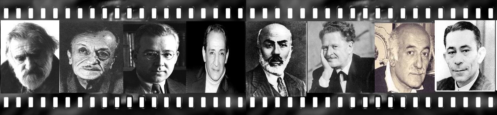

What is a POEM for me?
Do you believe in magic? Actually, I don’t. However, poems are like a magic. Listening music, reading poems, watching landscape all these are making people happy magically in daily life. Poem is a song without melody or painting in words. Maybe, it is a type tangible feelings or medium for self-expression. It helps people breathe and smile to life.It is an oinment for sorrow. Pen, paper and poems are only friends that you can talk when you are feeling alone. Perhaps, you can not touch a girl you love, yet it is sure that your poems touch her heart because poem is signature of your love, Perhaps, secret of the life is hidden among words. If you can learn to understand language of poetry, you can learn to figure out the secret of life.
Okan YILDIRIM
My Poems...
